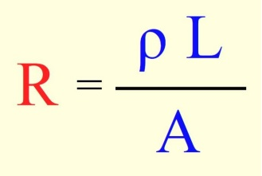

É a soma das tensões em um caminho fechado é igual a zero. Ou ainda,
a soma das tensões em um caminho fehado é igual a tensão da fonte.
Se usou 10 gastou 10, ela vai perdendo ao longo do tempo.
A lei de Ohm fala que a resistencia é determinada pelo ponto elétrico e a corrente elétrica.
Na lei de Ohm há uma conta para saber a corrente, essa conta é :
V = I * R
I = V / R
R = V / I
Tensão é a quantidade de ernegia gerada por pilhas ou baterias
que movem cargas elétricas para o restante do circuito elétrico.
Corrente elétrica é o fluxo, o caminho que as cargas elétricas
fazem quando se movem para um condutor elétrica
Resistencia Elétrica é a capacidade de um condutor dificultar a passagem do outro
